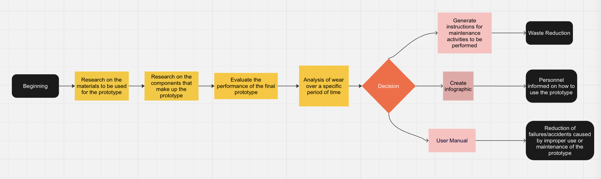

Project Managment / NOM036 / Time and Movement
February 2023 - June 2023
As mentioned previously, Audi México’s facility is responsible for the global production of the Audi Q5 model. The challenge assigned to our team focused on the redesign of a material-handling device (trolley) used to transport automotive components across different production areas.
The existing trolley configuration posed ergonomic risks to operators, particularly when loads exceeded the weight limits established under NOM-036 (Mexican ergonomic regulation for manual material handling).
Excessive force requirements during initial movement and load transportation increased the risk of musculoskeletal injuries, especially in the lower back region.
Due to the complexity of the project, the team was divided into specialized groups within a multidisciplinary structure composed of Mechanical Engineers and Industrial & Systems Engineers.
Mechanical engineers focused on the structural redesign and mechanical optimization of the trolley prototype. Meanwhile, the Industrial Engineering team conducted:
As shown in the reference videos above, the redesign concept was inspired by a spring-based mechanical mechanism capable of storing potential energy and releasing it forward to reduce the force required to initiate movement.
The objective was to minimize the initial push force required to overcome static friction, thereby reducing operator strain and improving handling efficiency.
By reducing biomechanical stress during repetitive transport activities, the redesigned system aimed to mitigate long-term musculoskeletal injury risks and improve overall workplace safety.
During the initial phase of the project, we developed a detailed process flowchart to structure the backlog of tasks and clearly define project milestones. This allowed us to align responsibilities, timelines, and deliverables across the multidisciplinary team.
My team was specifically responsible for developing the Preventive and Corrective Maintenance Manual for the redesigned trolley system.
This required extensive technical research and continuous validation with the Mechanical Engineering team to ensure alignment between the mechanical design specifications and maintenance protocols.
Regular coordination meetings were conducted to synchronize design updates, validate operational procedures, and ensure the accuracy and feasibility of the maintenance documentation.
The following sections were developed as part of the official Preventive and Corrective Maintenance Manual for the redesigned trolley device. The structure shown below reflects the actual table of contents of the formal PDF documentation delivered.
The expected outcome of this project was the development of a functional trolley system designed to reduce the physical force required by operators during material handling tasks.
From an ergonomic standpoint, the redesigned device was aligned with NOM-036 standards, ensuring compliance with Mexican regulations regarding manual load handling and occupational safety.
As part of our deliverables, my team developed a comprehensive Preventive and Corrective Maintenance Manual, structured to ensure operational sustainability, regulatory compliance, and long-term reliability of the redesigned system.